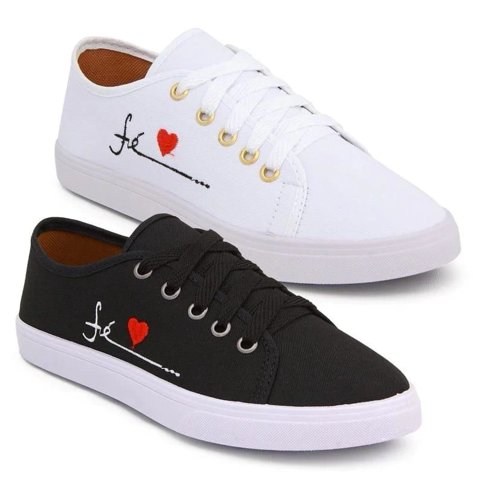

Missão
Desenvolvemos uma solução interativa de identificação de sensores IoT que simplifica conceitos complexos. Nossa missão é oferecer uma jornada educacional envolvente, despertando o interesse tecnológico de forma intuitiva.
Desenvolvemos uma solução interativa de identificação de sensores IoT que simplifica conceitos complexos. Nossa missão é oferecer uma jornada educacional envolvente, despertando o interesse tecnológico de forma intuitiva.
Ser a referência global em clareza e precisão, transformando a complexidade da identificação de valores em uma experiência simples, transparente e confiável para todos.
• HTML • PHP • CSS • API • JS • IoT
O VISIO é uma plataforma inovadora que combina visão computacional e IoT para identificar sensores de forma automática, segura e didática. Nosso objetivo é facilitar a gestão de sensores em ambientes educacionais e industriais, garantindo eficiência, segurança e aprendizado prático.

Isabela Tessarin
Desenvolvedora Full-Stack & Product Owner
Matheus Neri
Desenvolvedor Full-StackFernanda Amaral
Programadora Back-EndEmily Maiara
Programadora Back-End & Scrum Master
Guilherme Staconi
Analista de sistema e designerLorrana Generoso
Analista de sistema e designerSophia Peron
Analista de sistema e designer